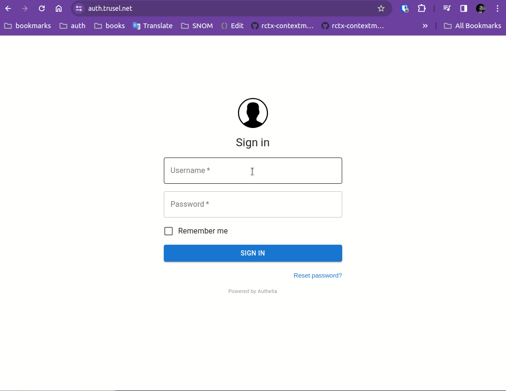

Authelia
Following guide is based on Self-Hosted SSO with Authelia and NGINX.
In this guide adoptation, we will use two domains:
- auth.trusel.net (Authelia)
- calypso.trusel.net (Papermerge)
Both domains are accessiable via HTTPS (with valid certificates). Both domains are resolved to the same host. There is an NGINX which receives requests for above mentioned domains (and takes care of the certs) and proxy passes the requests to the locally running Papermerge DMS or Authelia.
Local Authelia will run on 127.0.0.1:9091 and local Papermerge DMS will
run on 127.0.0.1:12000.

Step 1 - Authelia's Compose
Let's start with docker compose file for Authelia:
networks:
net:
driver: bridge
services:
authelia:
image: authelia/authelia
container_name: authelia
volumes:
- ${PWD}/authelia/authelia:/config
networks:
- net
ports:
- 9091:9091
restart: unless-stopped
environment:
- PUID=1000
- PGID=1000
- TZ=Europe/Berlin
redis:
image: redis:alpine
container_name: redis_authelia
volumes:
- ./redis:/data
networks:
- net
expose:
- 6379
restart: unless-stopped
environment:
- TZ=Europe/Berlin
- PUID=1000
- PGID=1000
Step 2 - Authelia's Configs
As you can see in compose file, there is a mount from local "authelia/authelia" folder to "/config". Let's create that folder and place all configuration in it:
mkdir -p authelia/authelia
cd authelia/authelia
touch configuration.yml
In configuration.yml put following:
server:
host: 0.0.0.0
port: 9091
log:
level: info
jwt_secret: zgpWgPv7lPDkxb0mJFZYc8DkE90jJ1LEl66RjQ6i6ekI7pXYrJQGmvHB6L6xNEEo
default_redirection_url: https://auth.trusel.net
authentication_backend:
file:
path: /config/users_database.yml
access_control:
default_policy: deny
rules:
- domain:
- "auth.trusel.net"
policy: bypass
- domain:
- "calypso.trusel.net"
policy: one_factor
session:
name: authelia_session
secret: zgpWgPv7lPDkxb0mJFZYc8DkE90jJ1LEl66RjQ6i6ekI7pXYrJQGmvHB6L6xNEEo
expiration: 12h # 12 hours
inactivity: 100m # 100 minutes
remember_me_duration: 1M # 1 month
domain: trusel.net
redis:
host: redis_authelia
port: 6379
regulation:
max_retries: 6
find_time: 5m
ban_time: 15m
storage:
encryption_key: 12341234123412341234556987239847239478akjdhahdkjh
local:
path: /config/db2.sqlite3
notifier:
disable_startup_check: false
filesystem:
filename: /config/notification.txt
The important part to note here is:
...
access_control:
default_policy: deny
rules:
- domain:
- "auth.trusel.net"
policy: bypass
- domain:
- "calypso.trusel.net"
policy: one_factor
...
Which setups access control for two domains: auth.trusel.net - which is the domain
under which Authelia is available and calypso.trusel.net the domain
under which Papermerge DMS application is available.
Step 3 - Authelia's Users
Let's create users on Authelia side. There are two users: "bender" and "leela". "bender" is administrative (superuser). "leela" is normal user and she is part of "family" group.
Here is the content of users_database.yml:
users:
bender:
displayname: "Bender"
password: $argon2id$v=19$m=65536,t=3,p=4$ML2qiuCXKNtSh1SC2zdiDA$Zq6ar+W+J1qUTbweP6uKfDCzPbhbHG3rrScaA6uKkcc
email: bender@mail.com
leela:
displayname: "Leela"
password: $argon2id$v=19$m=65536,t=3,p=4$Oe6oxqot1BT4Z8pb2EdNpw$qib0A48D71bybWPslNWBZ8ieK6B++XFtKbAvKMj0Px0
email: leela@mail.com
groups:
- family
Step 4 - NGINX
NGINX's sites-enabled has two files auth.trusel.net, which is Authelia's domain and
calypso.trusel.net which is Papermerge DMS domain.
Here is the content of /etc/nginx/sites-enabled/auth.trusel.net:
server {
server_name auth.trusel.net;
listen 80;
return 301 https://$server_name$request_uri;
}
server {
server_name auth.trusel.net;
listen 443 ssl;
ssl_certificate /etc/letsencrypt/live/auth.trusel.net/fullchain.pem;
ssl_certificate_key /etc/letsencrypt/live/auth.trusel.net/privkey.pem;
location / {
set $upstream_authelia http://127.0.0.1:9091;
proxy_pass $upstream_authelia;
add_header Access-Control-Allow-Origin *;
client_body_buffer_size 128k;
#Timeout if the real server is dead
proxy_next_upstream error timeout invalid_header http_500 http_502 http_503;
# Advanced Proxy Config
send_timeout 5m;
proxy_read_timeout 360;
proxy_send_timeout 360;
proxy_connect_timeout 360;
# Basic Proxy Config
proxy_set_header Host $host;
proxy_set_header X-Real-IP $remote_addr;
proxy_set_header X-Forwarded-For $proxy_add_x_forwarded_for;
proxy_set_header X-Forwarded-Proto $scheme;
proxy_set_header X-Forwarded-Host $http_host;
proxy_set_header X-Forwarded-Uri $request_uri;
proxy_set_header X-Forwarded-Ssl on;
proxy_redirect http:// $scheme://;
proxy_http_version 1.1;
proxy_set_header Connection "";
proxy_cache_bypass $cookie_session;
proxy_no_cache $cookie_session;
proxy_buffers 64 256k;
# If behind reverse proxy, forwards the correct IP
set_real_ip_from 10.0.0.0/8;
set_real_ip_from 172.0.0.0/8;
set_real_ip_from 192.168.0.0/16;
set_real_ip_from fc00::/7;
real_ip_header X-Forwarded-For;
real_ip_recursive on;
}
}
And below is the content of /etc/nginx/sites-enabled/calypso.trusel.net:
server {
server_name calypso.trusel.net;
listen 80;
return 301 https://$server_name$request_uri;
}
server {
server_name calypso.trusel.net;
listen 443 ssl http2;
ssl_certificate /etc/letsencrypt/live/calypso.trusel.net/fullchain.pem;
ssl_certificate_key /etc/letsencrypt/live/calypso.trusel.net/privkey.pem;
include snippets/authelia.conf; # Authelia auth endpoint
location / {
proxy_pass http://127.0.0.1:12000;
proxy_set_header Host $host;
proxy_set_header X-Real-IP $remote_addr;
proxy_set_header X-Forwarded-For $proxy_add_x_forwarded_for;
include snippets/auth.conf; # Protect this endpoint
}
}
It includes two snippets. One is snippets/authelia.conf:
location /authelia {
internal;
set $upstream_authelia http://127.0.0.1:9091/api/verify;
proxy_pass_request_body off;
proxy_pass $upstream_authelia;
proxy_set_header Content-Length "";
# Timeout if the real server is dead
proxy_next_upstream error timeout invalid_header http_500 http_502 http_503;
# [REQUIRED] Needed by Authelia to check authorizations of the resource.
# Provide either X-Original-URL and X-Forwarded-Proto or
# X-Forwarded-Proto, X-Forwarded-Host and X-Forwarded-Uri or both.
# Those headers will be used by Authelia to deduce the target url of the user.
# Basic Proxy Config
client_body_buffer_size 128k;
proxy_set_header Host $host;
proxy_set_header X-Original-URL $scheme://$http_host$request_uri;
proxy_set_header X-Real-IP $remote_addr;
proxy_set_header X-Forwarded-For $remote_addr;
proxy_set_header X-Forwarded-Proto $scheme;
proxy_set_header X-Forwarded-Host $http_host;
proxy_set_header X-Forwarded-Uri $request_uri;
proxy_set_header X-Forwarded-Ssl on;
proxy_redirect http:// $scheme://;
proxy_http_version 1.1;
proxy_set_header Connection "";
proxy_cache_bypass $cookie_session;
proxy_no_cache $cookie_session;
proxy_buffers 4 32k;
# Advanced Proxy Config
send_timeout 5m;
proxy_read_timeout 240;
proxy_send_timeout 240;
proxy_connect_timeout 240;
}
And another snippet is snippets/auth.conf.
This is the heart and the most relevant part of this guide!
The Most Important
!! The most important part of the entire guide - START !!
This is where "remote-user" header magic actually takes place.
It is snippets/auth.conf file included calypso.trusel.net.
Here is its content:
# Basic Authelia Config
# Send a subsequent request to Authelia to verify if the user is authenticated
# and has the right permissions to access the resource.
auth_request /authelia;
# Set the `target_url` variable based on the request. It will be used to build the portal
# URL with the correct redirection parameter.
auth_request_set $target_url $scheme://$http_host$request_uri;
# Set the X-Forwarded-User and X-Forwarded-Groups with the headers
# returned by Authelia for the backends which can consume them.
# This is not safe, as the backend must make sure that they come from the
# proxy. In the future, it's gonna be safe to just use OAuth.
auth_request_set $user $upstream_http_remote_user;
auth_request_set $groups $upstream_http_remote_groups;
auth_request_set $name $upstream_http_remote_name;
auth_request_set $email $upstream_http_remote_email;
proxy_set_header Remote-User $user;
proxy_set_header Remote-Groups $groups;
proxy_set_header Remote-Name $name;
proxy_set_header Remote-Email $email;
add_header Set-Cookie "remote_user=$user; path=/";
add_header Set-Cookie "remote_groups=$groups; path=/";
add_header Set-Cookie "remote_name=$name; path=/";
add_header Set-Cookie "remote_email=$email; path=/";
# If Authelia returns 401, then nginx redirects the user to the login portal.
# If it returns 200, then the request pass through to the backend.
# For other type of errors, nginx will handle them as usual.
error_page 401 =302 https://auth.trusel.net/?rd=$target_url;
The utmost importance are following lines:
proxy_set_header Remote-User $user;
proxy_set_header Remote-Groups $groups;
proxy_set_header Remote-Name $name;
proxy_set_header Remote-Email $email;
add_header Set-Cookie "remote_user=$user; path=/";
add_header Set-Cookie "remote_groups=$groups; path=/";
add_header Set-Cookie "remote_name=$name; path=/";
add_header Set-Cookie "remote_email=$email; path=/";
In above statements remote headers are set. Notice that besides "Remote-User" etc headers there also are "Set-Cookie" in other words, the user information is also passed as cookie. Passing Remote-User information along via cookies as well is required by Papermerge DMS.
!! The most important part of the entire guide - END !!
Step 5 - Papermerge
Start Papermerge DMS with following docker compose file:
services:
paper:
image: papermerge/papermerge:3.2
container_name: paper
ports:
- 12000:80
restart: unless-stopped
environment:
- PAPERMERGE__SECURITY__SECRET_KEY=abc-secret
- PAPERMERGE__AUTH__REMOTE=yes
- PAPERMERGE__AUTH__REMOTE_LOGOUT_ENDPOINT=https://auth.trusel.net/logout
- PAPERMERGE__AUTH__USERNAME=bender
- PAPERMERGE__AUTH__PASSWORD=not-used-but-needs-to-be-present
- PAPERMERGE__AUTH__EMAIL=bender@mail.com
Some key points to notice:
- The username should match existing user configured in Authelia. In our case it is "bender".
- The email should match the bender's email from Authelia side.
- User "shared" between Authelia and Papermerge DMS is superuser i.e. administrative user.
- You need to supply
PAPERMERGE__AUTH__PASSWORDvalue, however its value is not relevent, as you will be authenticating with password configured on Authelia side. - Any non-empty value will do for
PAPERMERGE__AUTH__REMOTE. It may be "1", "True", "yes".
Step 6 - Sign In with Superuser
In this guide superuser account is "bender". Its password is managed on Authelia side.
Once you have all containers + nginx up and running you can sign in with superuser.
Step 7 - Create "family" Group
Once inside Papermerge DMS with superuser account, create "family" group. Any user from "family" group will have all permissions but to manage users and groups. In our configuration example the only user from "family" group is "leela".

Step 8 - Sign In as "leela"
Sign in as "leela". Notice that for user "leela" there are no "users" and "groups" tab on the left side panel, as she does not have permissions to manage users and groups.
